Builder and Innovator of Knowledge
BEST ATTRIBUTE
These photos demonstrate how I develop knowledge, create ideas, solve problems, and continue learning.
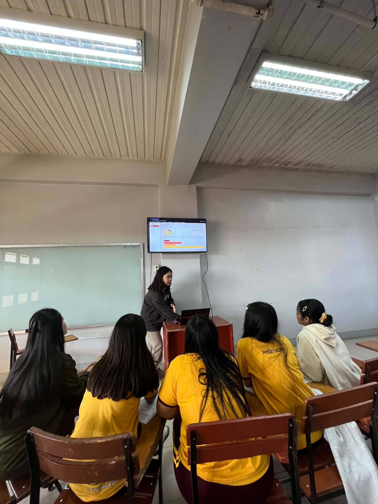
Presenting a project in front of the class
This photo shows me presenting a project in front of the class, demonstrating confidence and the ability to share ideas clearly. The context highlights communication and innovation, as presenting is a way of showcasing knowledge and creativity. In IT, project presentations are essential because they allow students to explain technical solutions, designs, or systems to others. This is important because it builds confidence, strengthens communication skills, and proves that innovation must be shared and understood to make an impact.
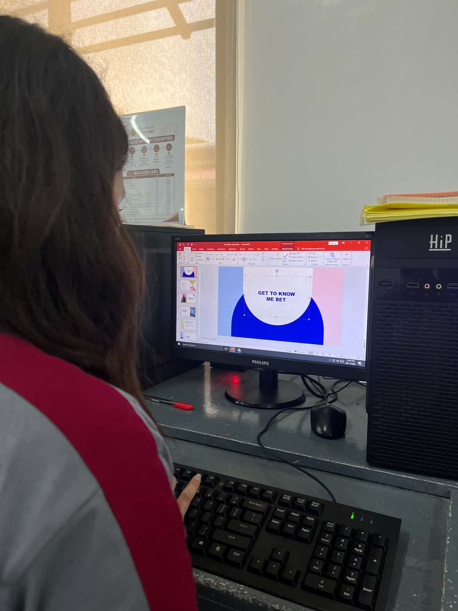
Designing something on my pc/laptop
This picture captures me designing on my pc/laptop, showing hands-on application of knowledge. The context emphasizes creativity and technical skill, as laptops are the primary tool for IT students. In IT, coding and design are the foundation of innovation, whether in software development, web design, or system solutions. This is important because it demonstrates how knowledge is applied to create new ideas, preparing me to be an innovator who can contribute to technological advancement.
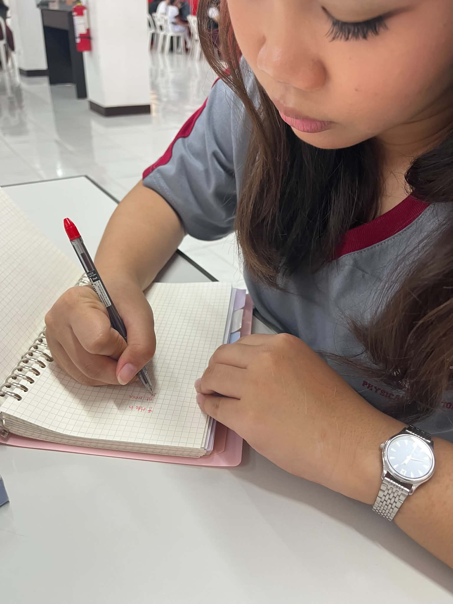
Brainstorming ideas on paper
This photo depicts me sketching or brainstorming coding ideas on paper, reflecting the process of planning before execution. The context highlights creativity and organization, as brainstorming is the first step in innovation. In IT, sketching algorithms, flowcharts, or system designs is crucial before actual coding. This is important because it trains me to think critically, organize ideas, and approach problems systematically, ensuring that innovation is well-planned and effective.
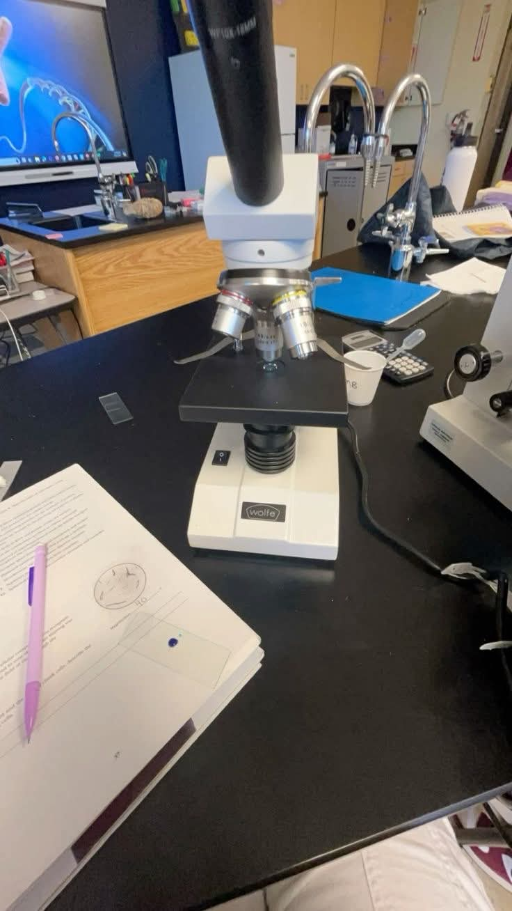
Experimenting in a science lab
This picture shows experimenting in a science lab, applying knowledge in a practical and investigative way. The context emphasizes curiosity and hands-on learning, which Rizal himself valued in his pursuit of knowledge. In IT, experimentation is similar to testing codes, running simulations, or trying new technologies to see how they work. This is important because it develops problem-solving skills, encourages innovation, and teaches me that failure is part of learning and discovery.
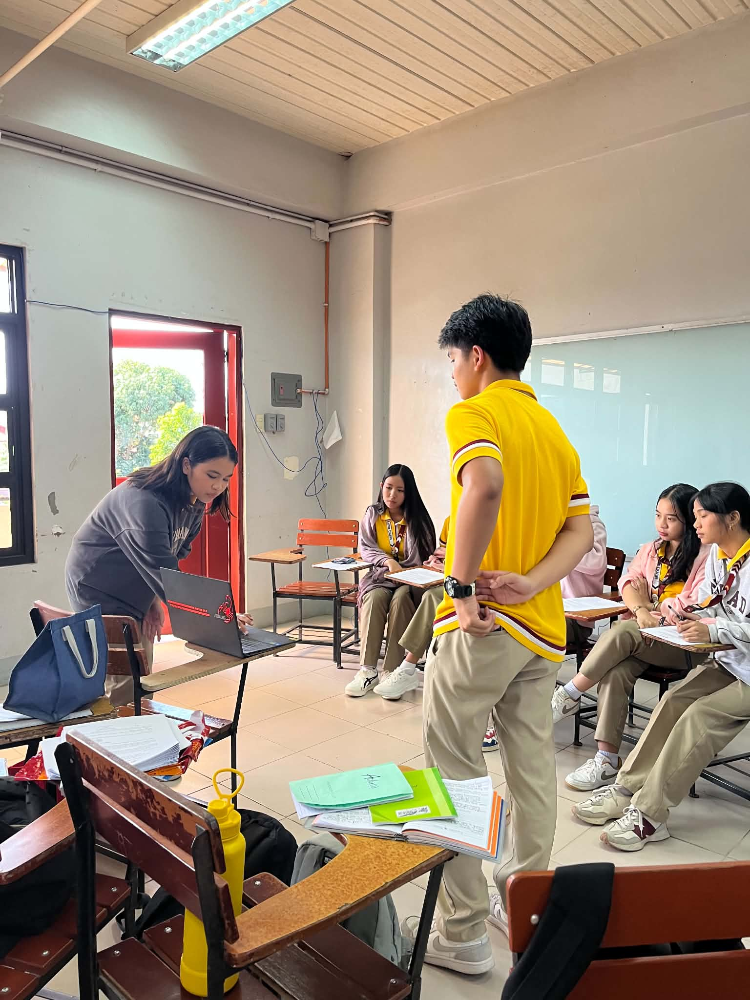
Showing a finished project
This photo captures me presenting a finished project, symbolizing the result of creativity and hard work. The context highlights achievement and innovation, showing that ideas can be transformed into tangible outputs. In IT, showcasing a completed project is vital because it demonstrates applied knowledge and technical skill. This is important because it proves that innovation is not just about ideas but about creating real solutions that can benefit others.
Efficient Professional and Effective Communicator
BEST ATTRIBUTE
These photos highlight how I express ideas clearly, lead discussions, write formal documents, and present confidently. They reflect the importance of communication in IT, proving that technical skills must be paired with professionalism and the ability to connect with others.
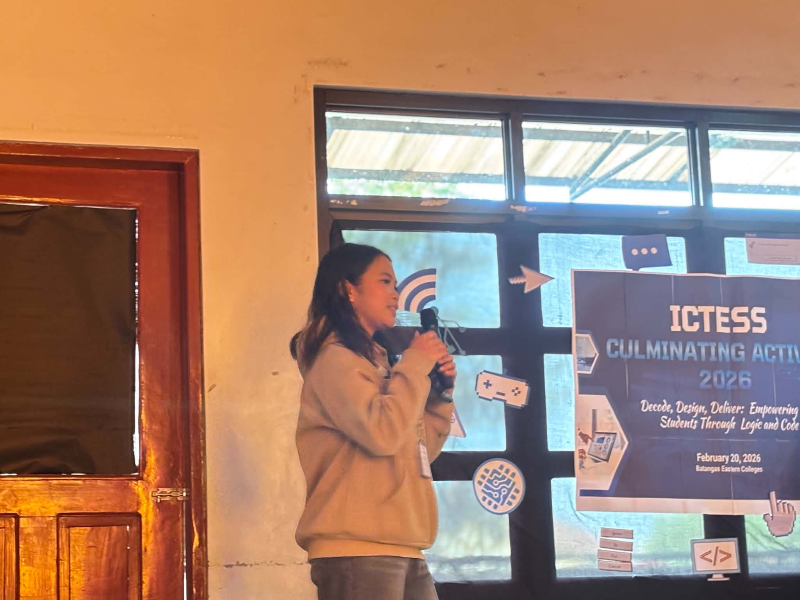
Delivering a speech
This photo shows me delivering a speech, demonstrating confidence and professionalism in communication. The context highlights the ability to express ideas clearly in front of an audience. In IT, effective communication is vital when presenting technical solutions, explaining system designs, or reporting project progress. This is important because it builds confidence, ensures that complex ideas are understood, and prepares me to be a professional who can bridge the gap between technology and people.
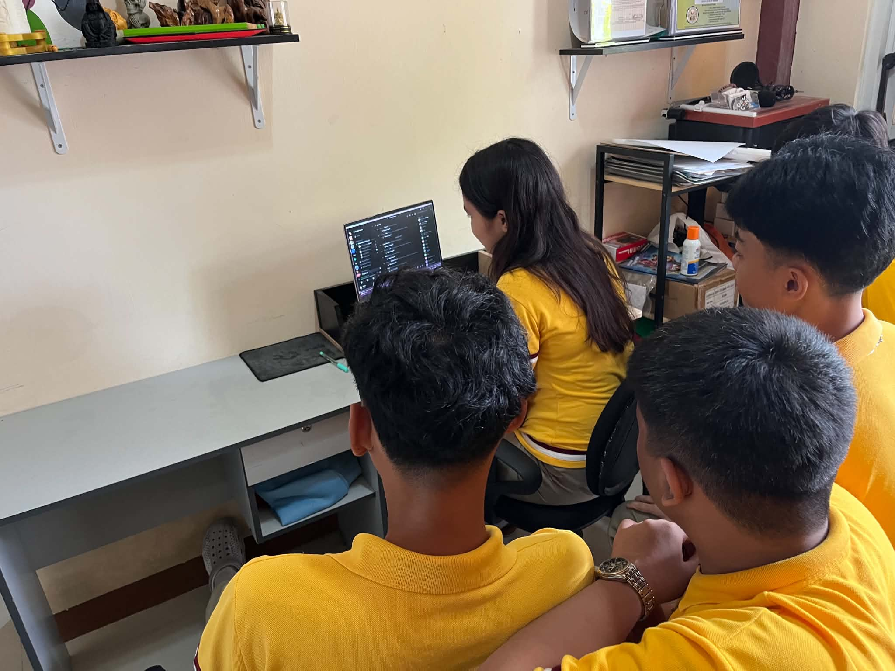
Leading a group discussion during work immersion
This picture captures me leading a group discussion during work immersion, showing initiative and leadership in guiding peers. The context emphasizes collaboration and teamwork in a professional setting. In IT, leading discussions is similar to managing team projects, where clear communication ensures tasks are completed efficiently. This is important because it develops leadership skills, strengthens collaboration, and prepares me to handle responsibilities in both academic and workplace environments.
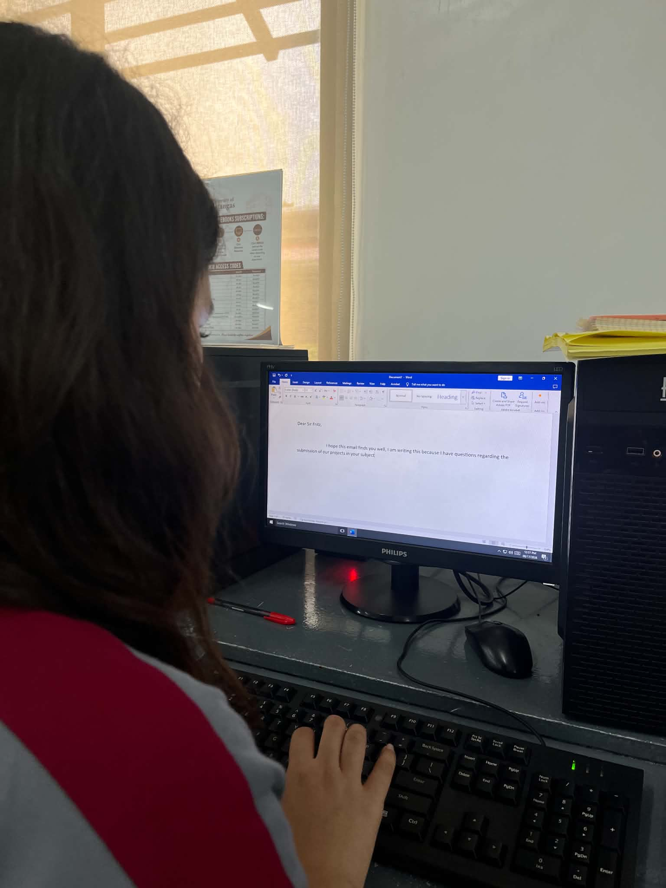
Writing a formal document or email
This photo depicts me writing a formal document or email, reflecting professionalism and attention to detail. The context highlights the importance of written communication in academic and professional life. In IT, documentation is crucial — whether writing reports, project proposals, or technical instructions. This is important because it trains me to be precise, organized, and professional, ensuring that information is communicated effectively and understood by others.
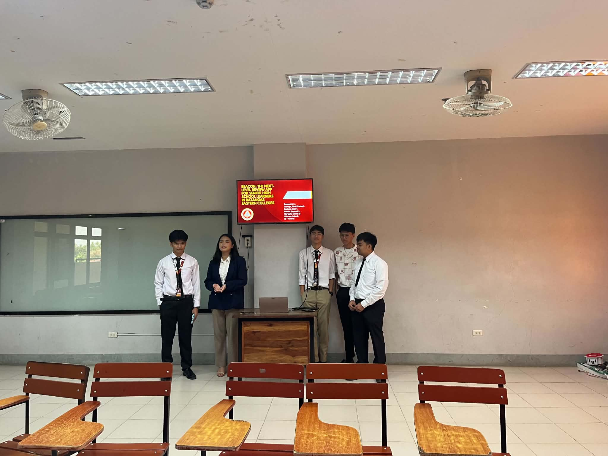
Confidently presenting slides in class during research defense
This picture shows me confidently presenting slides during a research defense, demonstrating clarity and professionalism in delivering information. The context emphasizes academic rigor and the ability to defend ideas. In IT, presenting research or project findings is essential to showcase technical solutions and innovations. This is important because it builds confidence, sharpens presentation skills, and proves that effective communication is as valuable as technical expertise.
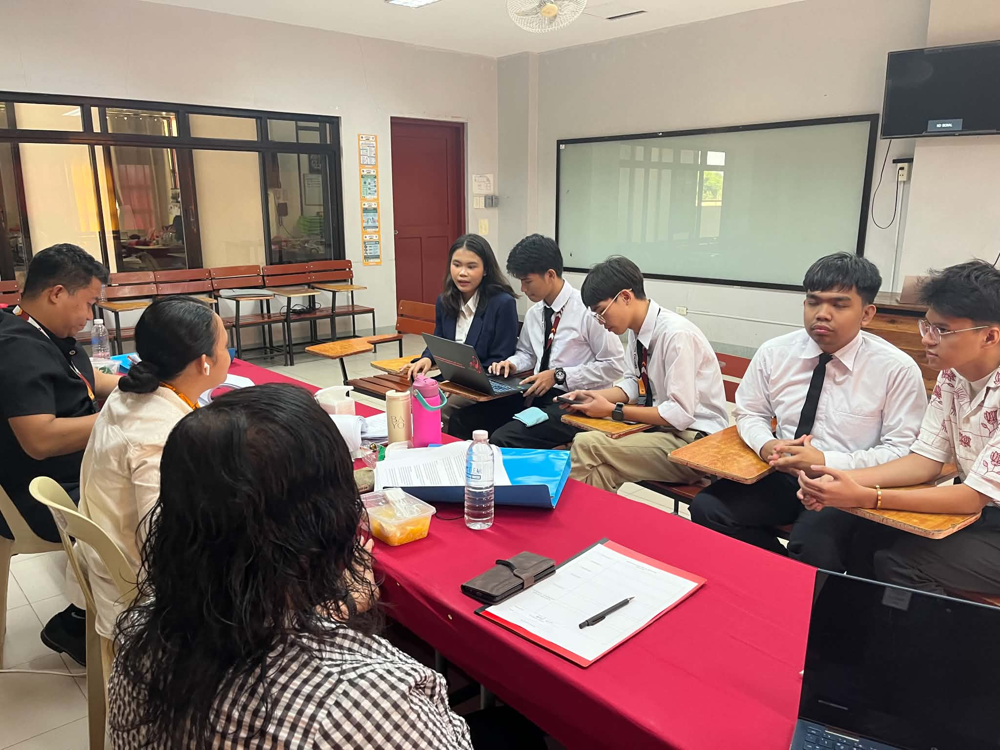
Engaging in a debate or Q&A session during research defense
This photo captures me engaging in a debate or Q&A session, showing confidence in answering questions and defending ideas. The context highlights critical thinking and quick response in academic discussions. In IT, this correlates to troubleshooting, problem-solving, and explaining technical decisions under pressure. This is important because it strengthens analytical skills, builds confidence in defending solutions, and prepares me to be an effective communicator in professional and technical environments.
Social, Moral and Global-Minded Citizen
BEST ATTRIBUTE
These photos highlight how I express ideas clearly, lead discussions, write formal documents, and present confidently. They reflect the importance of communication in IT, proving that technical skills must be paired with professionalism and the ability to connect with others.
Leading the prayer for the graduation ceremony
This photo shows me leading the prayer during a graduation ceremony, reflecting moral responsibility and spiritual leadership. The context highlights respect for tradition and the ability to guide others in solemn moments. In IT, this correlates to taking initiative and leading with integrity, ensuring that projects and teamwork are grounded in values. This is important because it proves that being a professional is not only about skills but also about moral character and the ability to inspire others.

Joining a school program called hackathon
This picture captures me participating in a hackathon, showing creativity, teamwork, and innovation. The context emphasizes active involvement in programs that challenge intellect and collaboration. In IT, hackathons are directly related to building solutions, coding under pressure, and applying knowledge in real-world scenarios. This is important because it develops problem-solving skills, strengthens collaboration, and shows that I can contribute to society through innovation and technology.
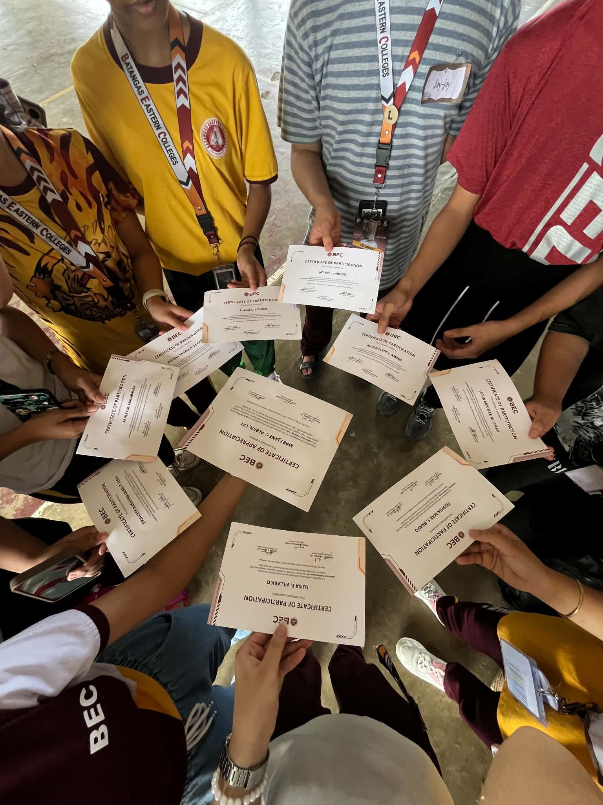
Joining a community activity about leadership and right conduct
This photo depicts me joining a community activity reflecting social responsibility and care for the environment. The context highlights leadership and moral conduct in serving the community. In IT, this correlates to sustainable practices and ethical responsibility in using technology to benefit society. This is important because it teaches me that knowledge should be applied responsibly, ensuring that progress in technology also respects social and environmental values.
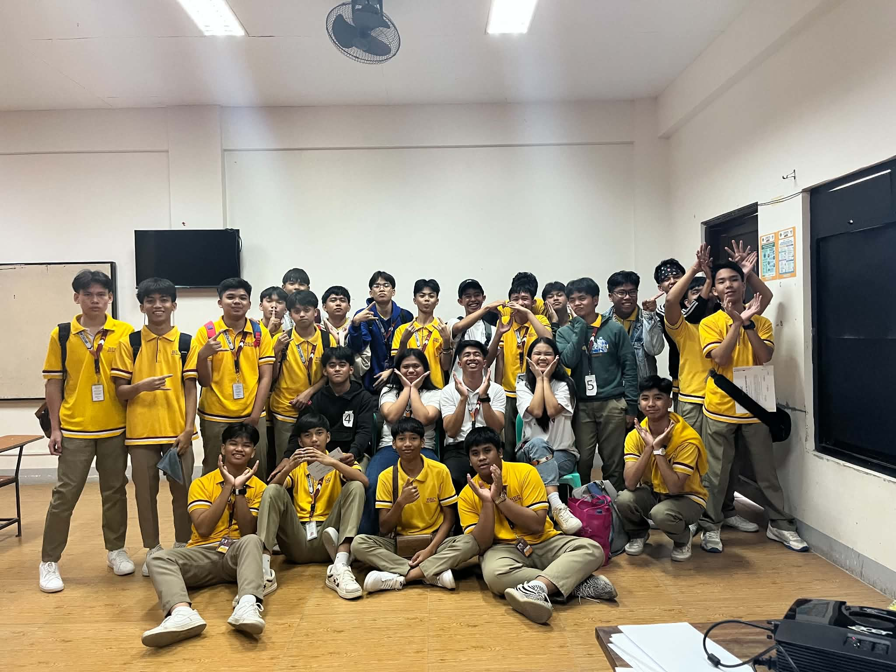
Respecting diversity
This picture shows me in a group photo with classmates of different backgrounds, symbolizing respect for diversity and inclusivity. The context emphasizes unity and acceptance in a multicultural environment. In IT, diversity is crucial because collaboration with people of different perspectives leads to better solutions and innovations. This is important because it builds empathy, strengthens teamwork, and prepares me to be a global-minded professional who values inclusivity.
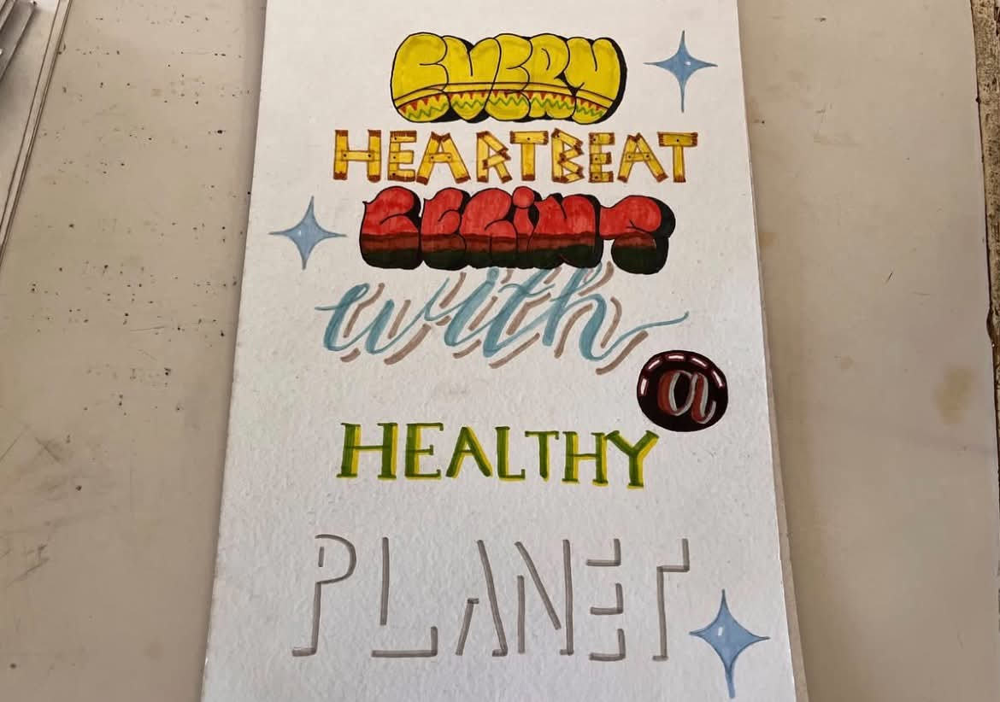
Created a slogan with a moral/global message
This photo captures the slogan I created, symbolizing advocacy for moral and global responsibility. The context highlights creativity and awareness, as slogans inspire and remind others of important values. In IT, creating a slogan reflects the ability to communicate ideas clearly and motivate others, similar to how professionals advocate for innovation and sustainability. This is important because it shows that lifelong learning and technical skills should be paired with advocacy, ensuring that knowledge contributes to the betterment of society and the world.p>
Transformed Lifelong Learner
BEST ATTRIBUTE
These photos show how I uphold values, respect diversity, join programs, and advocate for moral and global responsibility. They connect to IT by reminding me that technology should be used ethically and inclusively, serving both society and the world.
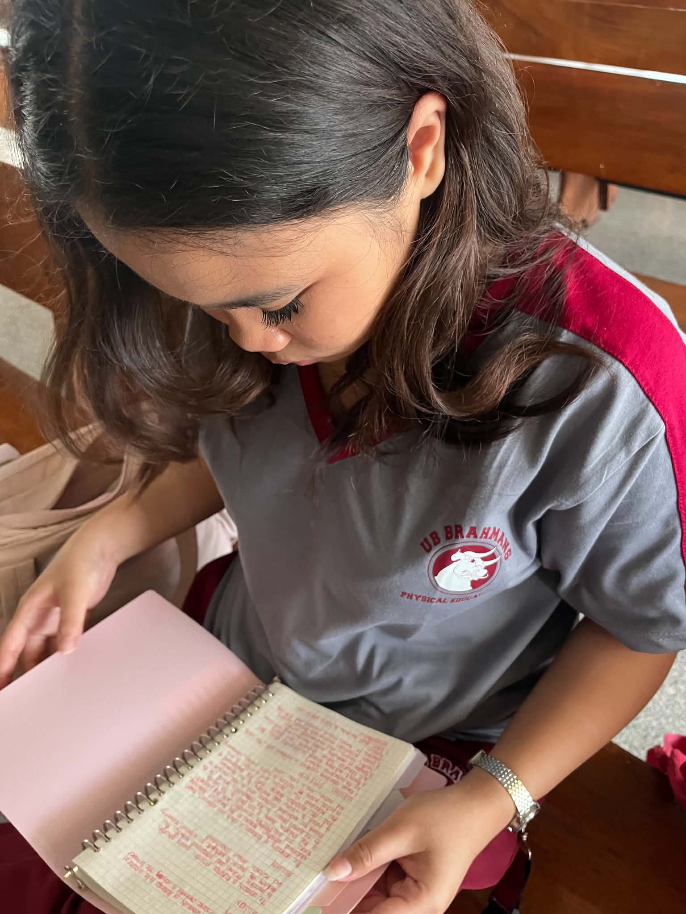
Reading outside of class (self-study)
This photo shows me reading outside of class, reflecting my commitment to continuous learning beyond formal lessons. The context highlights self-study as a way of expanding knowledge independently. In IT, self-study is crucial because technology evolves rapidly, and professionals must constantly update their skills. This is important because it proves that learning does not stop in the classroom, and being a lifelong learner ensures I remain adaptable and prepared for future challenges.
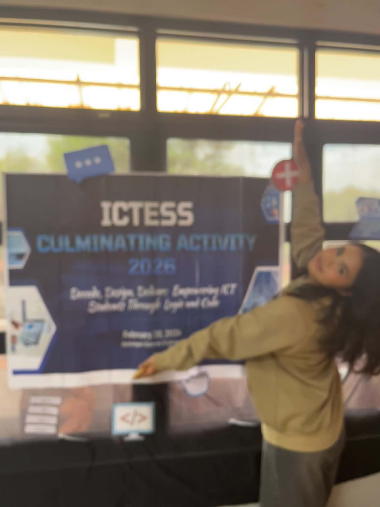
Attending a culminating activity of ICT
This picture captures me attending a culminating activity of ICT, showing eagerness to participate in academic events and apply what I have learned. The context emphasizes involvement in programs that celebrate growth and achievement. In IT, attending such activities mirrors participation in seminars, conferences, or project showcases where students present and learn from each other. This is important because it builds confidence, exposes me to new ideas, and motivates me to continue learning and improving.
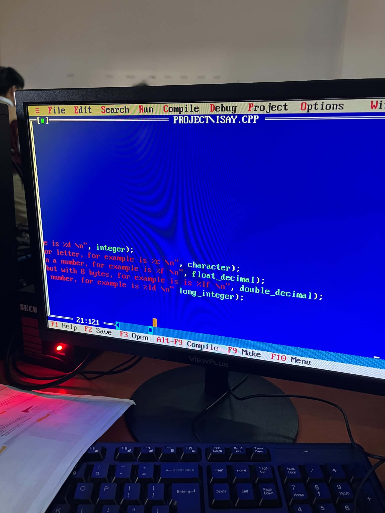
Practicing skills in coding
This photo depicts me practicing coding skills, reflecting discipline and persistence in technical learning. The context highlights hands-on application of knowledge, which is essential in IT. In IT, coding practice is the foundation of mastery, as consistent effort leads to proficiency in programming languages and system development. This is important because it shows that lifelong learning requires dedication, and practicing regularly ensures growth and readiness for future professional challenges.
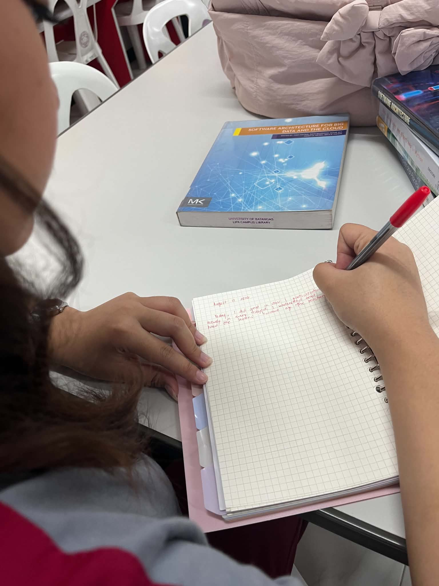
Journaling about my growth
This picture shows me journaling about my personal and academic growth, emphasizing self-awareness and reflection. The context highlights the importance of evaluating progress and setting goals. In IT, journaling is similar to documenting projects, analyzing errors, and planning improvements. This is important because it teaches me to learn from experiences, recognize strengths and weaknesses, and continuously strive for better results both in academics and in professional life.
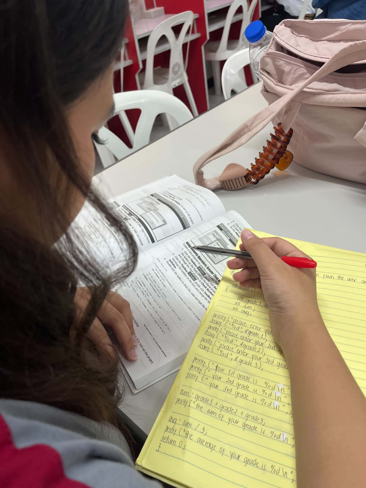
Revisiting old notes to improve them
This photo captures me revisiting old notes to improve them, showing commitment to refining knowledge and skills. The context highlights the value of reviewing past lessons to strengthen understanding. In IT, revisiting notes is like updating codes, revising documentation, or improving system designs based on new insights. This is important because it proves that lifelong learning is about growth and improvement, ensuring that knowledge evolves and becomes more effective over time.